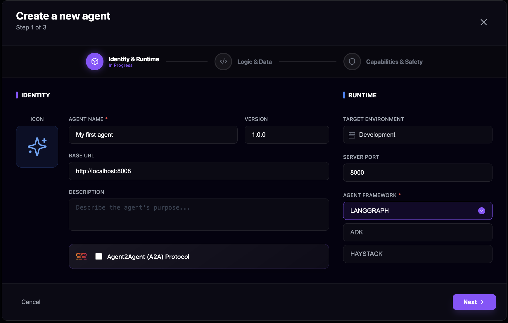

LangGraph Agents with Idun¶

This guide shows how to connect a LangGraph agent to the Idun Agent Platform and run it as a managed, observable service.
It continues from the Quickstart and assumes that:
- The platform is running via
docker compose -f docker-compose.dev.yml up --build. - You can access the Manager UI at
http://localhost:3000. - You are familiar with the basic LangGraph Python quickstart (LangGraph Quickstart).
1. Create an Agent configuration in Idun¶
- Open your browser at
http://localhost:3000and press Login (no credentials needed for local dev). - Click "Create an agent".

- Fill in the basic info:
- Name:
My first LangGraph agent - Base URL:
http://localhost:8008(where your LangGraph agent will be reachable) - Server Port:
8008(local development port) - Agent framework: select
LangGraph - Click Next.
- Fill in the framework-specific settings:
- Name:
My first LangGraph agent - Graph Definition (or equivalent field):
my_langgraph_agent/agent.py:appThis should point to the Python module and attribute that exposes your LangGraph app (for example, theagent,graphorappobject from the LangGraph quickstart). For an existing project, reuse your current module and object name. - For checkpointing/memory and observability, keep the default values for now. You can later switch to SQLite/PostgreSQL checkpointing and plug in observability providers.
- Click Next.
- For now, skip MCP Server and Guardrails; these are covered in their own guides.
- Click Create Agent.

Congratulations
Your LangGraph agent configuration is created in the Idun Agent Manager.
2. Get the Agent API Key¶
- In the Agent Dashboard, click on your newly created LangGraph agent.
- Go to the API Integration tab.
- Click Show Key and copy the Agent API Key.

You will use this key to let your LangGraph agent fetch its configuration from the Idun Agent Manager.
3. Connect your LangGraph agent project¶
Now that the Idun Agent Platform is ready, you can connect either an existing LangGraph project or create a new one.
- If you already have a LangGraph agent project:
Keep your current project structure. Make sure the Graph Definition you configured in Idun points to the module and object that already expose your compiled LangGraph app (for example
my_project/agent.py:agent). Then follow Step 3 (configure Idun access) and Step 4 (run the agent) below from within your existing project. - If you don’t have a LangGraph agent yet: Follow Step 1 and Step 2 below to create a new LangGraph project, then continue with Step 3 and Step 4 to connect it to Idun.
Step 1: Create the project directory (for new projects)¶
mkdir demo-langgraph-idun-agent
cd demo-langgraph-idun-agent
Step 2: Initialize the LangGraph agent (for new projects)¶
- In your editor, create and activate a Python 3.12 virtual environment.
- Follow the official LangGraph Python quickstart to build a simple agent:
At the end, you should have a Python module (for example agent.py) that exposes your LangGraph app object, e.g.:
from langgraph.graph import StateGraph, START, END
# ... define your state, nodes, and edges ...
app = StateGraph(...).compile()
Make sure the object name you expose here (e.g. app) matches what you configured in the Graph Definition field in the Manager (for example my_langgraph_agent/agent.py:app).
Step 3: Configure Idun platform access (for existing or new projects)¶
Install the Idun Agent Engine and LangGraph packages in your project:
pip install idun-agent-engine langgraph aiosqlite
Create an .env file for your LangGraph agent and add the following variables (adjust host if your Manager is not on localhost):
IDUN_MANAGER_HOST=http://localhost:8000
IDUN_AGENT_API_KEY=<PASTE_THE_AGENT_KEY_FROM_STEP_2>
Make sure you create this .env file inside your LangGraph project folder and that any helper scripts you use load it from the correct path.
Step 4: Run your LangGraph agent with Idun (for existing or new projects)¶
Export the environment variables from your .env file in your terminal:
set -o allexport
source ./my_langgraph_agent/.env
set +o allexport
Then start the Idun Agent Engine in managed mode so it pulls configuration from the Manager and loads your LangGraph graph:
idun agent serve --source manager
Congratulations
Your LangGraph agent is now running behind the Idun Agent Engine and managed by the Idun Agent Platform.
4. Test your agent¶
- In the Manager UI, go to your LangGraph agent’s API Integration tab.
- Use the built-in chat or your own client to send a request.
Try a simple question or task that your graph can handle, for example:
Add 3 and 4.

Congratulations
You’ve successfully connected a LangGraph agent to Idun.
Next Steps¶
From here you can enrich your LangGraph agent with more platform capabilities:
- Observability – Monitor your agent’s performance and traces.
- Memory – Add conversation and state persistence.
- MCP – Attach MCP tools to your agent.
- Guardrails – Protect your agents with safety and policy checks.
- A2A – Enable agent-to-agent collaboration.